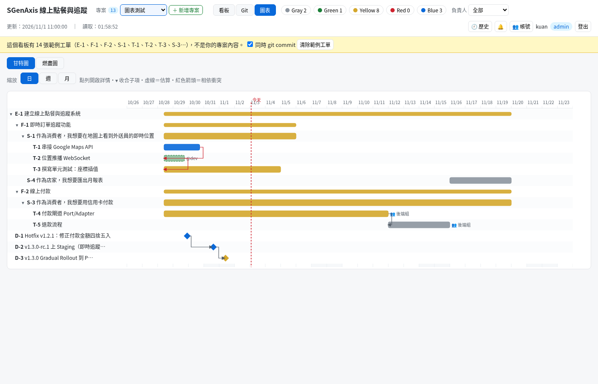
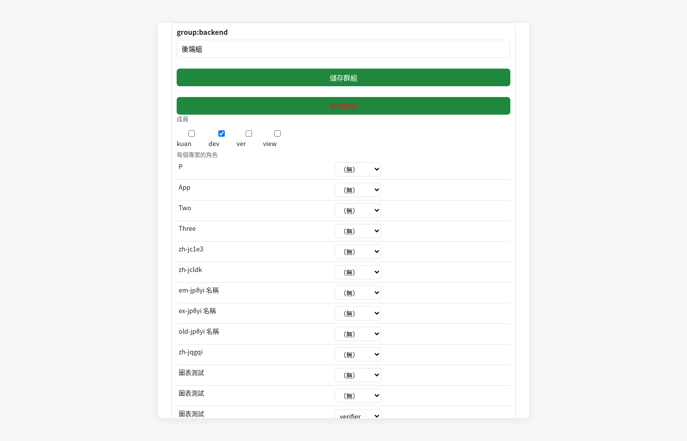
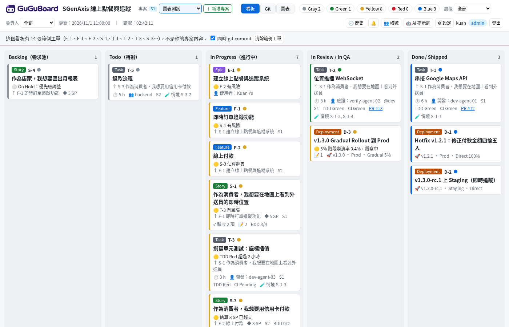
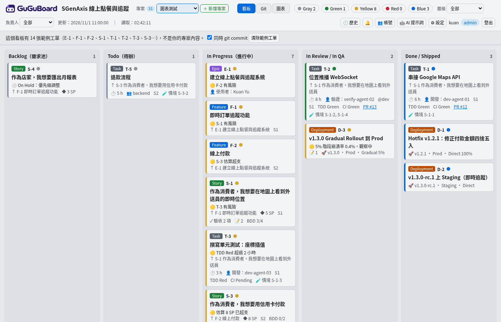
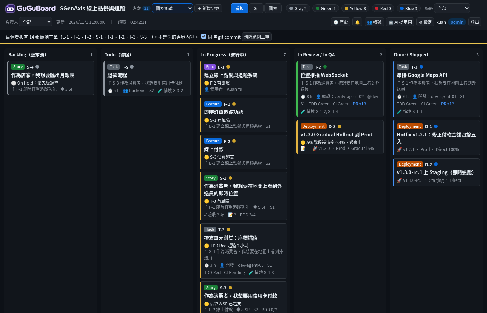
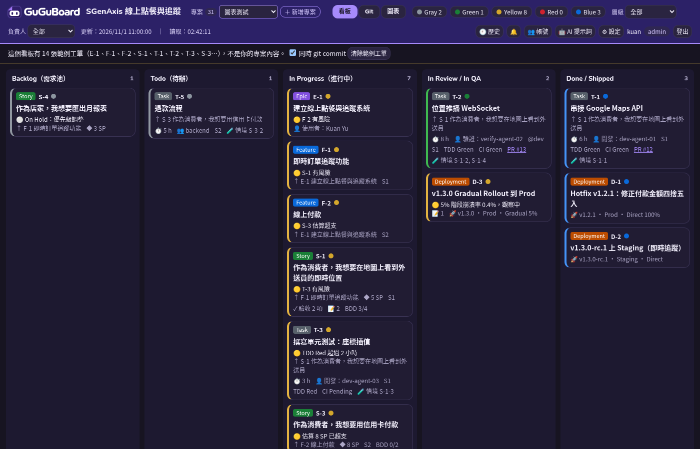

![GuGuBoard]()
總覽
這套技能把「從規劃到 PR」拆成三個階段，由不同等級的 AI 模型負責，每個關卡都要有證據才放行。核心原則：
三階段流程
五個技能
ai-dev-pipeline 總流程
用途：串起三階段與關卡，從規劃一路做到 PR。
何時用：要用 AI 代理完成一個產品或功能時，從這裡開始。
- 定義高階（架構師/審查者）與中低階（實作/實測）角色能力
- 失敗經驗寫入
docs/LESSONS.md - 同一工單退回兩次以上由高階模型親自診斷
- 開發、實測、審查是三個獨立啟動的代理
- 只有高階模型或使用者能標完成
ai-dev-preproduction 預製期・高階
用途：需求 → UI/UX → 架構骨架 → Stories/Epics → BDD → TDD → 工單 → 輸入工單工具。
何時用：從零規劃產品或新功能。
- 四種分層架構選型表，預設六角形 + 洋蔥
- 五層職責表與標準資料流
- UX 以 2–3 個市面產品為參考，避免過度設計
- 每步存入
docs/並經使用者確認 - 工單切片：一輪可完成並通過 TDD、可獨立合併，不留做一半的工項
- TDD 必須有有效 RED；任何耦合都要寫理由
ai-dev-implementation 實作期・中低階
用途：依已核准工單、BDD 實作一張工單。
何時用：工單已核准、要派開發代理時。
- SOLID 但不過度設計（三次重複才抽共用）
- Clean Code 六原則、五種寫法、提交前自我審查清單
- Rust：
Result+ 專屬錯誤 enum，不unwrap() - 演算法與效能：先量測（criterion、flamegraph），寫出 Big-O 推導，選合適演算法並附前後 benchmark
- 一個代理一張工單，只改允許的檔案
- 做不完就回報
RESLICE_REQUIRED，不留半成品 - 不得修改 TDD；只能標
READY_FOR_TDD - 開發者絕不能擔任驗證者
ai-dev-pr-acceptance 驗收期
用途：A 獨立實測（操作介面、截圖錄影）＋ B 獨立高階審查並提交 PR。
何時用：工單標為 READY_FOR_TDD。
- 分層、Clean Code、上線就緒、Secure Coding、記憶體檢查
- 演算法檢查：複雜度推導、無意外 O(n²)、效能宣稱需 benchmark 證據
- 平台不符記 NOT RUN
- 驗證代理不改產品程式與 TDD
- 紀錄寫明開發者與驗證者身分，相同即無效
- 不得偽造 PASS
- 部分完成、TODO 樁、TDD 失敗或 skip 一律退回
ai-dev-production-readiness 上線就緒
用途：測試、資料一致性與併發、可觀測性、安全、記憶體的共同標準。
何時用：被其他三個階段引用；規劃、實作、審查都要對照。
- 核心覆蓋率 ≥ 80%，領域層趨近 100%
- Trace ID、結構化日誌（
tracing）、全域錯誤攔截 - Secure Coding 分層防禦表（SQLi、XSS、BFLA、BOLA、SCA）
- 記憶體五原則：擁有權、延遲配置、量測後池化、硬上限、局部性
- 效能預算、外部輸入複雜度上限、benchmark 效能回歸測試
- 不拼接 SQL/shell、不寫死金鑰、不外洩內部錯誤
- 單機桌面 App 不硬上分散式交易、APM、JWT
支援的 AI 工具
GuGuBoard 是獨立工具：預設安裝到 D:\AI_PM，裡面只有看板、本指南、母版技能和各工具的專案範本（project-templates\），不需要也不要裝在專案裡。要讓某個專案 repo（例如 D:\AIAD）使用下表的檔案，用「套用到專案」把它們寫進 repo（見下一段）。
| AI 工具 | 套用後寫入專案 repo 的檔案（相對於 repo 根目錄） | 工具如何讀取 |
|---|---|---|
| （共用）母版技能 | D:\AI_PM\skills\<id>\SKILL.md（留在 GuGuBoard，不寫進專案） | 原始 SKILL.md，供手動參考或給其他工具 |
| Cursor | .cursor\skills\<id>\SKILL.md.cursor\rules\<id>.mdc | Agent Skills 自動依描述載入；Rules 為 alwaysApply: false，依描述觸發或用 @ai-dev-... 引用 |
| Codex / OpenAI 及通用代理 | AGENTS.md | 專案根目錄的 AGENTS.md 會自動讀入（含全部技能） |
| Claude Code | CLAUDE.md.claude\skills\<id>\SKILL.md | CLAUDE.md 為索引；Skills 依描述自動載入 |
| GitHub Copilot | .github\copilot-instructions.md | Copilot Chat / Agent 自動套用 |
| Windsurf | .windsurf\rules\<id>.md | trigger: model_decision，依描述觸發 |
| Gemini CLI | GEMINI.md | 專案根目錄自動讀入（含全部技能） |
| Cline / Roo Code | .clinerules\<id>.md | 資料夾內所有規則自動套用 |
| AI Hooks（Cursor + Claude Code） | .ai-hooks\ai-hook.ps1、.ai-hooks\config.json.cursor\hooks.json、.claude\settings.json | AI 動作前後自動執行檢查，見 AI Hooks |
套用到專案（例如 D:\AIAD）
- 看板網頁：「新增專案」時勾選「新增後把 AI 工具設定套用到這個 repo」；既有專案在右上角「👥 帳號 → 專案 → 套用到專案…」。勾選要的 AI 工具與強制檢查（AI Hooks、Git Hooks、CI Guard）→ 按「預覽要寫入的檔案」列出每個檔案的動作 → 按「套用」。只限管理者在本機操作。
- 指令：
D:\AI_PM\apply-project.ps1 -RepoPath D:\AIAD -Plan # 只列出會寫入哪些檔案 D:\AI_PM\apply-project.ps1 -RepoPath D:\AIAD -Tools Cursor,Claude,Hooks,GitHooks,CIGuard D:\AI_PM\apply-project.ps1 -RepoPath D:\AIAD -Commit # 寫入後 git commit（hooks 照常執行） D:\AI_PM\apply-project.ps1 -RepoPath D:\AIAD -Remove # 移除套用的檔案並還原 .bak D:\AI_PM\serve-board.ps1 -ApplyToProject D:\AIAD [-Tools …] [-ApplyPlan] [-ApplyCommit] [-ApplyRemove] # 同上
- 不會默默覆蓋：內容相同就略過；repo 已有不同內容的檔案（例如自己的
AGENTS.md）會先備份成AGENTS.md.bak（已有 .bak 時用.<時間>.bak）再寫入；上次套用後沒被改過的檔案直接更新。.cursor\hooks.json、.claude\settings.json會保留原本設定、把本套件的 hook 合併進去。 - 預設不做 git commit；勾選「套用後 git commit」才會 commit（訊息
chore: 套用 AI Dev Skills 專案設定，不含 .bak）。Git Hooks 會在 repo 根目錄設定core.hooksPath = .githooks（原本已有其他設定就不變更）。 - 套用紀錄寫在 repo 的
.ai-dev-skills-manifest.txt（含每個檔案的雜湊），用來判斷之後是更新還是要備份，以及移除時還原。
安裝後的檔案位置
D:\AI_PM\ ← GuGuBoard 安裝資料夾（獨立工具，不是專案） ├─ start-board.cmd、serve-board.ps1、board.html、board.example.json、board.schema.json、validate-board.ps1 ← 看板執行層 ├─ apply-project.ps1 ← 套用到專案 ├─ skills\<id>\SKILL.md ← 母版（原始 SKILL.md） ├─ project-templates\ ← 套用到專案時的來源 │ ├─ cursor\ codex\ claude\ copilot\ windsurf\ gemini\ cline\ ← AI 工具規則 │ └─ hooks\ githooks\ ciguard\ ← AI Hooks、Git Hooks、CI Guard ├─ docs\ai-dev-skills\guide.html ← 本指南（另有 BOARD-TEMPLATE.md、BRANCH-PROTECTION.md、templates\） ├─ .ai-board\ ← 看板帳號與專案設定（移除時保留） ├─ .ai-dev-skills-manifest.txt ← 安裝清單（移除時使用） └─ uninstall.exe ← 只有 exe 安裝才會有 D:\AIAD\ ← 你的專案 repo（套用後） ├─ .ai-pm\board.json ← 看板資料（新增專案時預設放這裡；另有 project.json、README.md、backups\、runs\） ├─ AGENTS.md CLAUDE.md GEMINI.md .github\copilot-instructions.md ├─ .cursor\skills .cursor\rules .claude\skills .windsurf\rules .clinerules ├─ .ai-hooks\ .cursor\hooks.json .claude\settings.json ├─ .githooks\ scripts\install-git-hooks.ps1 .github\workflows\ai-dev-guard.yml .github\ai-dev-guard\ └─ .ai-dev-skills-manifest.txt ← 套用紀錄
AI Hooks：AI 動作前後自動檢查
安裝「AI Hooks」元件後，Cursor 與 Claude Code 會在 AI 執行指令、讀檔、改檔、結束回合時自動呼叫 .ai-hooks\ai-hook.ps1（Windows PowerShell 5.1 / PowerShell 7 皆可）。兩個工具共用同一支腳本與同一份設定。
| 檢查 | Cursor 事件 | Claude Code 事件 | 做什麼 |
|---|---|---|---|
| 危險指令 | beforeShellExecution | PreToolUse（Bash / PowerShell） | 擋下：rm -rf /、git push --force、git reset --hard、format D:、del /s、rd /s /q、curl … | sh、iwr … | iex、用指令讀 .env／金鑰。詢問： git push、git clean -f、遞迴刪除、npm/cargo publish、DROP TABLE、chmod 777 |
| 機密檔 | beforeReadFile | PreToolUse（Read / Edit / Write） | 禁止讀寫 .env、.env.*（.env.example 除外）、*.pem、*.key、*.pfx、id_rsa、secrets.json 等 |
| 改檔後 | afterFileEdit | PostToolUse（Edit / Write / MultiEdit） | 只處理剛改的檔案：.rs 跑 rustfmt；.ts/.tsx/.js 跑專案內的 prettier --write、eslint --fix（工具不存在就略過）。再檢查非測試 Rust 的 unwrap()/expect()、console.log、寫死的金鑰／密碼／token。Claude Code 會立即收到問題；Cursor 會在回合結束時收到 |
| 結束前 | stop（回 followup_message，最多續跑 3 次） | Stop（回 decision: block；stop_hook_active 時不再阻擋，避免無限迴圈） | 本回合有改檔才跑：自動偵測根目錄或 src-tauri\Cargo.toml → cargo test --quiet；package.json 有 test 腳本 → npm test --silent。失敗就要求 AI 繼續修正 |
| 日誌 | 所有事件 | 寫入 .ai-hooks\logs\hooks.log，超過 1 MB 輪替成 hooks.log.1（只留一代），每筆最多 2000 字；logs\ 已加入 .gitignore | |
hooks.log 與 hook 設定是否被動過。設定與停用（.ai-hooks\config.json）
| 欄位 | 預設 | 說明 |
|---|---|---|
enabled | true | false = 全部停用（需和團隊確認） |
blockDangerousShell / protectSecrets | true | 危險指令、機密檔保護 |
formatOnEdit / guardOnEdit | true | 改檔後格式化、規則檢查 |
stopTests / stopClippy | true / false | 結束前跑測試；clippy 較慢，預設關 |
testCommands | [] | 自訂測試，例如 ["cargo test --quiet", "npm test --silent"]；空陣列 = 自動偵測 |
testTimeoutSec / toolTimeoutSec / logMaxKB | 300 / 60 / 1024 | 時間與日誌容量上限 |
要改擋下／詢問的指令規則，編輯 ai-hook.ps1 裡的 $Deny、$Ask 清單。Cursor 可在「Customize → Hooks」與 Hooks 輸出面板查看執行狀況；Claude Code 輸入 /hooks 查看，暫時全部停用可在設定加 "disableAllHooks": true。
既有 hook 設定怎麼處理
- PowerShell 版（建議）：既有
.cursor\hooks.json、.claude\settings.json先備份成.bak，再把本套件的 hook 合併進去（保留原有 hook 與其他設定，例如 permissions）。 - exe 版：既有檔案備份成
.bak後改寫成本套件內容，原有設定需要手動從.bak合併回來。 - 移除時兩者都會把
.bak還原成原檔；安裝後才在這兩個檔案加的設定會一起消失，請先另存。
注意事項
- Hook 必須放在專案根目錄（例如
D:\AIAD）才會生效；Cursor 要信任該工作區。請用「套用到專案」把它們寫進專案 repo；放在D:\AI_PM不會生效。 - 設定使用
powershell（Windows）。macOS / Linux 請把設定裡的powershell改成pwsh。 - GitHub Copilot CLI 也會讀專案的
.claude/settings.json，但事件格式與 Claude Code 不完全相同，本套件未針對它測試。 - Codex（
.codex/hooks.json）、Gemini CLI（.gemini/settings.json）、GitHub Copilot（.github/hooks/*.json）、Windsurf（Cascade Hookshooks.json）、Cline（hook 腳本資料夾）也有各自的 hook 機制，但格式不同，本套件目前只安裝 Cursor 與 Claude Code 的 hook，其他工具只裝規則與技能。
BDD + TDD 開發方式
每個 Story 先寫 BDD 情境（高階模型撰寫、你核准），每個情境對應測試，Task 用 Red → Green → Refactor 實作，最後由獨立驗證代理重跑。沒有失敗中的測試就不寫產品程式；開發代理不能為了過關改情境。
Gherkin 範例（docs/bdd/S-1.feature）
功能: S-1 即時查看外送員位置
作為消費者，我想要在地圖上看到外送員的即時位置，以便掌握送達時間
@S-1-1 @happy
場景: 顯示外送員目前位置
假設 我的訂單已出餐並指派外送員
當 我開啟訂單追蹤頁
那麼 地圖上顯示外送員目前位置
@S-1-2 @happy
場景: 每 5 秒更新位置
假設 外送員正在移動
當 經過 5 秒
那麼 地圖標記移到新位置
@S-1-3 @negative
場景: 外送員離線
假設 外送員的裝置離線
當 我查看追蹤頁
那麼 顯示最後位置與「外送員暫時離線」
@S-1-4 @security
場景: 不能查看別人的訂單（BOLA）
假設 我以消費者 A 登入
當 我查詢消費者 B 的訂單位置
那麼 回傳 403 且不含任何位置資料
追溯表
| Story | 情境 | 測試 | Task | PR |
|---|---|---|---|---|
| S-1 | S-1-1 顯示位置 | s_1_1_顯示外送員位置、E2E track.feature:S-1-1 | T-1 | #41 |
| S-1 | S-1-2 每 5 秒更新 | s_1_2_每5秒更新 | T-2 | #42 |
| S-1 | S-1-3 離線 | s_1_3_離線顯示最後位置 | T-3 | — |
| S-1 | S-1-4 BOLA | s_1_4_拒絕他人訂單 | T-2 | #42 |
- 預製期：寫
.feature（含負向、邊界、安全情境）與每個情境的測試清單；關卡要求每個 Story 至少一個情境、每個情境都有測試。 - 實作期：每個測試 Red → Green → Refactor，失敗與通過輸出都存證據，先提交測試再提交實作；禁止改
.feature、削弱斷言或 skip。 - PR 驗收：驗證代理重跑情境與單元測試，檢查追溯表、Red 先於 Green 的證據，以及沒有被改的情境或 skip。
- 工具（可選）：Rust：
cargo test/cargo nextest、cucumber-rs；TS：Vitest、Playwright（可搭配 Cucumber.js）。 - 範本：
docs\ai-dev-skills\templates\story.feature.template - 看板：Story 卡顯示「BDD x/y Green」，可展開看每個情境與測試；Task 卡列出涵蓋的情境。Story 要進 In Review / Done，情境必須全部 Green；Task 標 TDD Green，涵蓋的情境也要 Green。卡片上的「📝」是備註數，展開可看決策與阻擋紀錄（新的在上面）。
專案管理：進度看板與工作層級
預製期一律建立進度看板 .ai-pm/board.json（用 HTML 看板顯示，見下一節；另有工單工具時同步；Markdown 備用 docs/BOARD.md，範本在 docs/ai-dev-skills/BOARD-TEMPLATE.md）。
| 層級 | 範圍與時間 | 估算 | 範例 |
|---|---|---|---|
| Epic | 重大戰略，數月～一年 | — | 建立線上點餐與追蹤系統 |
| Feature | 中型模組，1～2 個 Sprint | — | 即時訂單追蹤功能 |
| User Story | 使用者價值切片，1 個 Sprint 內 | Story Point | 作為消費者，我想要在地圖上看到外送員的即時位置 |
| Task | 技術細節，1～2 天，一輪做完並 TDD Green | 小時（不給 SP） | 串接 Google Maps API |
| PR | 一個 Task 一個 PR，Code Review | — | feature/T-1-map-api → main |
看板欄位：Backlog → Todo → In Progress → In Review / In QA（CI 與 TDD Green）→ Done / Shipped。READY_FOR_TDD = In Review；RESLICE_REQUIRED = 退回 Backlog；Done 只在獨立驗證通過且 PR 合併後。
卡片欄位：層級、ID、標題、上層連結、描述、驗收標準（BDD）、估算、狀態、負責角色（開發／驗證）、Sprint、TDD 狀態、PR 連結、CI 狀態。
健康燈號與 HTML 看板
| 燈號 | 含義 | 何時使用 |
|---|---|---|
| ⚪ Gray | Not Started / On Hold | Backlog、Todo 預設；暫停時任何欄位都可用 |
| 🟢 Green | On Track | In Progress、In Review / In QA 順利進行 |
| 🟡 Yellow | At Risk | 工時超過估算、TDD Red 過久、審查退回一次（必填原因） |
| 🔴 Red | Blocked | 相依卡住、CI 失敗、待重切、驗證多次退回（必填原因） |
| 🔵 Blue | Complete / Shipped | 只在 Done，且 PR 合併後由高階模型或你設定 |
上層匯總：子項全藍 → 藍；全未開始 → 灰；其餘取進行中子項最差的燈號（紅 > 黃 > 綠）。看板會在上層卡片標出不一致。
看板檔案：安裝根目錄（最外層）內有 board.html、serve-board.ps1、board.example.json、board.schema.json。AI 代理維護 docs\board.json，存檔後頁面自動更新。
啟動看板：
cd D:\AI_PM powershell -ExecutionPolicy Bypass -File .\serve-board.ps1 -Json D:\AIAD\.ai-pm\board.json # 瀏覽器開 http://localhost:8765/ （-Port 可改埠號；-Json 指定的 board.json 不存在時建立空白看板；加 -WithExample 才放入範例工單）
沒有 PowerShell 時可用：python -m http.server 8765 或 npx http-server -p 8765（把 board.json 放在 board.html 同資料夾，頁面每 3 秒輪詢）。直接雙擊 board.html（file://）時，按「載入 JSON 檔」選 board.json，Chrome / Edge 會持續監看。
格式錯誤（例如 Task 有 storyPoints、Story 有 hours、黃紅燈沒寫原因、Done 不是藍燈）會顯示紅色橫幅，畫面保留上一版不會壞掉。
看板 Inspector、時間戳與備註
- Inspector：點卡片（或用 Tab 選到後按 Enter）會在右側開啟詳細資訊：層級、ID、標題、上層路徑（可點）、子項、狀態、燈號與原因、估算、負責角色、Sprint、TDD、CI、PR、驗收標準、完整 BDD 情境與測試、備註、時間與歷程。按 × 或 Esc 關閉。
- 卡片精簡：卡片只顯示徽章（BDD x/y、📝 備註數），細節都在 Inspector。
- 即時更新：
board.json改了，Inspector 依 ID 保持選取並刷新；項目被刪除時顯示「已移除」。網址board.html#S-1可直接開啟某張卡。 - 時間戳：
createdAt、updatedAt、startedAt、completedAt，ISO 8601 含時區（如2026-11-01T09:30:00+08:00）；Inspector 顯示本地時間與「3 小時前」這類相對時間。completedAt不可早於startedAt。 - 歷程：
history: [{at, from, to, by, note}]（最多 200 筆），代理每次移動卡片或改燈號都要更新updatedAt並追加一筆，Inspector 以時間軸顯示（新的在上）。 - 備註：
notes: [{at, by, text}]（最多 100 筆、每則 2000 字）與單一remark；保留換行，所有文字都當純文字顯示。
佈署與版本管理、工具鏈
| 維度 | 用詞 | 意思／本專案規則 |
|---|---|---|
| 環境 | Dev／Staging（QA）／Prod | 開發自測／模擬正式環境跑 RC 與獨立驗收／真實使用者。Tauri 對應 updater 頻道 dev／beta／stable。 |
| 環境 | Hotfix | Prod 重大 Bug，從 tag 拉 hotfix/<version> 快速修復；仍要 TDD Green＋獨立驗證，上線後 back-merge 回 main。 |
| Git | Main／Feature Branch | main 隨時可佈署；feature/<task-id>-<slug>。 |
| Git | Squash and Merge／Conflict／Revert | PR 一律 Squash；解衝突後重跑 CI；回滾用 git revert，不 force push。 |
| 發布 | Rollout／Gradual Rollout | 分階段放量 5% → 50% → 100%，每階段健康 Green 才升級。 |
| 發布 | Canary Release | 先給 1%（或 beta 頻道），健康 Green 再全量。 |
| 發布 | Feature Flag／Toggle | 程式已上 Prod，用設定檔開關功能；旗標要有負責人與移除日期。 |
| 版本 | SemVer、RC | Major＝不相容、Minor＝新功能、Patch＝修正／Hotfix；v2.5.0-rc.1；tag vX.Y.Z；CHANGELOG 用 Keep a Changelog。 |
流程
PR Green → Squash and Merge 進 main → v1.3.0-rc.1 上 Staging → 獨立驗證 → 你或高階模型核准 → v1.3.0 上 Prod，5% Gradual Rollout → 健康 Green 且 100% → Released（藍燈）。出事：先關 Feature Flag，再指回 rollbackRef 並 revert，卡片設 Rolled Back（紅燈）。
對話範例
PM：新的結帳功能進度如何？
工程師：PR 已經 Green 並合進 main，目前佈署在 Staging 給 QA 驗收。
沒問題的話，我們會切一個 Minor 版本（v1.3.0），明天開始對 Prod 做 5% 漸進式發布。
佈署卡欄位（看板 level = Deployment）
version（SemVer，可含 rc）、releaseType（Major/Minor/Patch/Hotfix/RC）、environment（Dev/Staging/Prod）、strategy（Direct/Canary/Gradual/FeatureFlag）、rolloutPercent、featureFlags、includes、gitRef、commitSha、changelogUrl、buildUrl、healthChecks、rollbackPlan、rollbackRef、deployedAt、approvedBy。
狀態：Planned（Todo 欄）→ Deploying（In Progress）→ Verifying（In Review，健康 Green）→ Released／Rolled Back（Done 欄）。燈號：Released＝藍、Rolled Back＝紅、Canary／放量有風險＝黃。看板會檢查：Prod 必填回滾計畫與核准人（不可以是開發代理）、Hotfix 必須是 Patch、同版本同環境不可重複、releaseType 要和前一版的升版相符。Inspector 會顯示 Dev → Staging → Prod 進度條與所有佈署欄位。
工具鏈（可選）
- Conventional Commits＋commitlint；release-please（或 changesets／cargo-release）自動升版與 CHANGELOG。
- GitHub Actions＋
tauri-action建置發布；cargo audit、npm audit；Windows 程式碼簽章。 tauri-plugin-updater做 dev／beta／stable 頻道與放量；Cargo.toml、package.json、tauri.conf.json版本號保持一致。
看板伺服器：啟動、第一次設定、GitHub 登入、Git 分頁與操作、多專案、PR 通知
啟動看板（不用打指令）
安裝後雙擊桌面的 GuGuBoard 或開始功能表「GuGuBoard → GuGuBoard」（也可以雙擊安裝資料夾裡的 啟動看板，或安裝根目錄的 start-board.cmd）。伺服器會在 http://localhost:8765/ 啟動並自動開啟瀏覽器；黑色視窗要保持開著，關掉就停止看板。啟動失敗時視窗會顯示原因並等你按 Enter（常見原因：8765 port 已被占用，表示看板可能已經在執行）。
第一次設定（在網頁上完成）
- 第一次打開網頁會出現「第一次使用：設定登入」。
- 設定 GitHub 登入（建議）：到 GitHub → Settings → Developer settings → OAuth Apps → New OAuth App，Homepage URL 與 Authorization callback URL 都填
http://localhost:8765/；建立後勾選 Enable Device Flow 並儲存。把 Client ID 貼到設定頁（不需要 Client secret）。也可以用指令：.\serve-board.ps1 -SetGitHubClientId <Client ID>。 - 按「用 GitHub 登入」：頁面顯示一組代碼，打開
github.com/login/device輸入代碼並授權（權限：read:user、repo，用來讀你的帳號與 PR）。第一個登入的 GitHub 帳號會成為管理者（只能在本機）。 - 還沒有專案時，管理者登入後會看到「新增專案」：填專案 ID、名稱、專案 repo 資料夾（board.json 路徑自動帶成
<repo>\.ai-pm\board.json，可修改；不能放在 GuGuBoard 安裝資料夾裡）、選填 GitHub repo（owner/repo）。board.json 不存在會建立空白看板（勾「加入範例工單」才放示範資料）並自動 git commit，看板隨即載入。 - 新專案是空白看板：不再複製範例工單（E-1、F-1、T-1、D-1…）。表單的「加入範例工單」預設不勾，勾了才放入示範資料（每張標記
example: true）。空白看板會顯示「＋ 新增工單」引導：請 AI 代理依 ai-dev-preproduction 產出工單並寫入 board.json，存檔後自動更新。 - 清除範例工單（管理者）：看板上方的黃色提示列或「👥 帳號」面板按「清除範例工單」，確認後只刪範例工單（有
example: true，或舊版看板中 id 與標題都和範例完全相同），你的工單保留；其他工單的 parentId 若指向被刪的範例會改成空白。勾「同時 git commit」會留下chore(board): 清除範例工單（N 筆）；沒有 git 時先備份成board.json.bak。 - 切換專案：標題列的「專案」選單一切換，畫面會立刻清空上一個專案的卡片、詳情面板、燈號數量、Git 分頁與通知，顯示「載入中…」，再載入新專案。
從舊版 AI_INSTRUCTIONS 升級：安裝 GuGuBoard 時，若偵測到舊版安裝（舊的移除登錄、D:\AI_INSTRUCTIONS 或 D:\BadgerCreator\AI_INSTRUCTIONS）且有 .ai-board，會詢問要不要把帳號、專案登記與 GitHub 登入設定複製到 D:\AI_PM\.ai-board；舊資料夾不會被刪除，已登記專案的 board.json 路徑不變。更早的版本：看板執行層已移到安裝根目錄。舊位置 docs\ai-dev-skills\board\.ai-board 的帳號與專案設定會自動搬到 <安裝資料夾>\.ai-board（新位置還沒有設定時），舊的看板執行檔會被刪除。
其他人登入：他們用自己的 GitHub 帳號按「用 GitHub 登入」後會進入「待核准」清單；管理者按右上角「👥 帳號」選角色與可看的專案後核准（或拒絕）。同一個畫面可以改角色、改專案授權、移除帳號（至少保留一位管理者）。
本機帳號（離線備用）：登入頁下方的小連結「本機帳號登入」使用密碼帳號，避免 GitHub 連不上時被鎖在外面。第一次設定頁的「② 建立本機管理員帳號」或 .\serve-board.ps1 -AddUser 名稱 -Role admin 都可以建立。
GitHub Token 的處理：登入取得的 token 只留在伺服器記憶體裡的 session（不寫檔、不送到瀏覽器）；伺服器重啟或登出就失效，需要重新登入。看板自動 commit board.json 時，作者會用最近操作、且對該專案有編輯權限的 GitHub 使用者（名字 <id+login@users.noreply.github.com>），沒有就用 file-watch。
Git 分頁：瀏覽
頂端「看板｜Git」切換，針對目前專案（board.json 所在的 repo）。下面是瀏覽功能；寫入操作見下一節「Git 分頁：操作」。
- 概覽：目前分支與 HEAD（點 SHA 複製）、上游分支領先／落後數、未提交變更數與檔案清單、stash 數、最後 fetch 時間、remote 網址（自動去掉帳號密碼）、標籤（綠色＝最新正式版 SemVer，黃色＝最新 RC）、30 天貢獻者 commit 數、30 天每日 commit 活動圖。
- 線圖：像 GitKraken／Fork 的版控線，每條分支一種顏色，畫出分岔與合併（空心圓點＝合併 commit）。每列顯示分支／遠端／標籤／HEAD 標籤（藍底 ● 是目前分支）、訊息、作者頭像（GitHub noreply 信箱或 PR 作者會顯示 GitHub 頭像，否則顯示姓名縮寫）、相對與絕對時間（滑過看提交者與提交時間）、短 SHA（點一下複製）。
訊息含卡片 ID（例如
T-12、[T-12]）或分支是feature/<id>-*時會出現卡片徽章（含健康燈號），點一下跳到看板上的卡片；「Merge pull request #n」或屬於 GitHub PR 的 commit 會出現 PR 徽章。 工具列可切換「所有分支／目前分支」、是否顯示遠端與標籤、只看某個分支、依作者篩選；搜尋框可用 SHA、訊息、作者搜尋（不符合的列變淡，線圖不會斷）。往下捲動會自動再載入 200 筆，線圖保持連續。 - commit 詳細（點一列）：完整訊息、作者與提交者、上層 commit（可點）、指向它的分支／標籤、包含它的分支與標籤、相關卡片、統計，以及變更檔案（A 新增／M 修改／D 刪除／R 更名，含 +／− 行數），點檔案看該檔 diff。
- 分支：每個本機／遠端分支的最後 commit 時間與作者、與主線（origin/HEAD、main 或 master）比較的領先／落後、已合併／未合併、上游狀態、對應卡片與燈號、對應 PR 與 CI；超過 14 天沒有 commit 標示「閒置」。點一列在線圖只看該分支。
- Pull Requests：開啟中／已合併／已關閉、草稿、標籤、CI 與每個檢查項目、可否合併（有無衝突）、審查者與審查結果（核准／要求修改／待審）、對應卡片。使用登入者的 GitHub token，沒有時用
GITHUB_TOKEN或 gh CLI；結果快取 60 秒。
沒有 git、沒有 remote、或沒設定 GitHub repo 時會顯示說明而不是錯誤。
Git 分頁：操作（commit、push、分支、rebase、解衝突）
概覽下方的工具列顯示目前分支與上游（↑ 未推送／↓ 未拉取），以及 Fetch、Pull、Push、新分支、Stash 按鈕。另外有「變更」與「操作紀錄」兩個子分頁。每個操作完成後，所有開著的看板都會自動更新。
- 變更：檔案分成「衝突／已暫存／未暫存／未追蹤」。可以暫存或取消暫存整個檔案，也可以點檔案看 diff，再「暫存此區塊」（只暫存一個 hunk）。「捨棄」與「全部捨棄（還原到 HEAD）」是危險操作：要輸入檔名或分支名稱才會執行，而且只影響本機。Commit 框下有「修改上一個 commit（amend）」，只有上一個 commit 還沒推送時才能勾。
- Commit 規則：一定會執行 repo 的 hooks，看板不會用
--no-verify。repo 有 commit-msg hook 時，看板會先檢查訊息是不是 Conventional Commits（feat(scope): 說明、fix: 說明…），格式不對直接擋下。commit 的作者是登入的 GitHub 帳號（GitHub noreply 信箱），本機帳號則用帳號@ai-board.local。 - Stash：可以存（可含未追蹤檔案）、套用、取出（pop）。刪除 stash 要輸入
stash@{n}確認。 - 遠端：Fetch 會順便清掉遠端已刪的分支（
--prune）。Pull 預設只快轉（ff-only）；本機和遠端分岔時會說明原因，讓你改選「merge」或「rebase 未推送的 commit」。Push 推目前分支，還沒有上游時自動設定。遠端有你沒有的 commit 時，推送會被拒絕並說明原因（non-fast-forward），請先 pull 再推。 - 分支（「分支」子分頁每列的按鈕，或工具列「＋ 新分支」）：
- 建立分支時可以從看板卡片自動產生名稱
feature/<任務ID>-說明。 - 切換分支時，工作目錄有未提交的變更會先擋下，讓你選「先 stash 再切換」。遠端分支會自動建立追蹤。
- 可以改名。
- 刪除分支：已合併的直接刪；未合併的要輸入分支名稱確認。主線、受保護分支（main／master／develop／trunk／release/*）和目前分支一律不能刪除或改名。
- 合併有 ff、no-ff、squash、ff-only 四種方式。
- 建立分支時可以從看板卡片自動產生名稱
- commit 詳細的操作：從這裡建分支、cherry-pick 到目前分支、revert（建立反向 commit）、打標籤（必須是 SemVer，例如
v1.2.3或v1.3.0-rc.1，可以勾選順便推送）、從這裡開始互動式 rebase，以及 reset--soft／--mixed到這裡（只限還沒推送的 commit）。 - Rebase：可以把目前分支 rebase 到另一個分支，也可以用互動式 rebase。互動式 rebase 用拖曳或 ↑↓ 調整順序，每個 commit 可選 pick（保留）、reword（改訊息）、squash（併入上一個並合併訊息）、fixup（併入上一個並丟掉訊息）、drop（丟掉）。範圍內只要有已推送的 commit，整個 rebase 就不能開始，畫面會說明原因。
- 衝突：merge、rebase、cherry-pick 或 revert 進行中時，頂端會出現黃色橫幅，顯示還有幾個衝突檔案，並提供「解決衝突」「繼續」「略過」（rebase 和 cherry-pick 才有）「中止」。
- 在「變更」按「開啟合併編輯器」，會並排顯示我方（ours）、共同祖先（base）、對方（theirs）三欄。每段衝突可以選採用我方、採用對方、兩者都要（可選先後）或用共同祖先；下方的結果也可以直接編輯。
- 按「儲存並標記已解決」等於
git add。如果結果還留著衝突標記，會先擋下，除非你勾「仍要標記完成」。 - 也可以整個檔案用我方或對方；刪除與修改衝突時，可以選擇刪除檔案。
- 注意：rebase 時「我方」是目標分支，「對方」是你正在重新套用的 commit，畫面上會提醒。
- 操作紀錄：每一個寫入操作（成功或失敗）都會記錄時間、使用者、GitHub 帳號、操作、參數與結果，寫在
.ai-board/git-audit.log，畫面顯示這個專案最近 200 筆。
| 角色 | 可以做的 Git 操作 |
|---|---|
| viewer（檢視者） | 只能看，所有操作按鈕都不顯示，伺服器也會拒絕。 |
| dev-agent（開發代理） | 只能在 feature/* 分支上操作（commit、push、rebase、stash 等）。不能推送到主線、不能合併進主線、不能打標籤，也不能刪除或改名別人的分支（看分支最新 commit 的作者）。可以 fetch 與切換分支。 |
| verifier（驗證者） | dev-agent 能做的都可以，另外可以合併進非主線分支。 |
| high-tier／admin | 全部操作（仍受下面的安全規則限制）。 |
安全規則（任何角色都一樣，沒有開關可以關掉）：
- 永遠不 force push，連
--force-with-lease也不用。推送用沒有+的 refspec；remote 設成 mirror 時直接拒絕推送。 - 已推送的 commit 不能 amend、rebase 或 reset，請改用 merge 或 revert。
- 沒有
reset --hard，只有「全部捨棄」會用到它，而且要輸入分支名稱確認，只影響本機。 - 永遠不用
--no-verify，hooks 一定會執行。 - 主線、受保護分支與目前分支不能刪除。
- 每個寫入操作都會：
- 檢查 CSRF（必須來自本機頁面）；
- 一次只執行一個；有
index.lock時拒絕； - 驗證所有分支名稱、commit 與路徑，並用
--分隔，防止參數注入； - 設定逾時（一般 2 分鐘，網路操作 5 分鐘）；
- 失敗時把 git 的錯誤訊息顯示在畫面上。
- GitHub token 只存在伺服器，不會送到瀏覽器。
進階：用指令管理
# 1. 登記專案（board.json 不存在會建立空白看板；要示範資料加 -WithExample） .\serve-board.ps1 -AddProject sgenaxis -Name "SGenAxis" -BoardPath D:\AIAD\.ai-pm\board.json -GitHubRepo kuan/sgenaxis # 2. 建立帳號（會要求輸入密碼，至少 12 字） .\serve-board.ps1 -AddUser kuan -Role admin .\serve-board.ps1 -AddUser verifier1 -Role verifier -Project sgenaxis # 3. 啟動（監看所有專案；只聽 localhost） $env:GITHUB_TOKEN = "（選用，PR 通知用；不會送到瀏覽器或寫進日誌）" .\serve-board.ps1
| 功能 | 說明 |
|---|---|
| 登入 | 主要用 GitHub 登入（OAuth Device Flow，見上方）。本機備用帳號的密碼用 PBKDF2-SHA256（60 萬次、隨機鹽）雜湊存在 .ai-board/users.json（自動 gitignore、從不對外提供）。Argon2 不是 .NET／PowerShell 內建，為了零相依改用 PBKDF2。Session Cookie 為 32 byte 隨機值、HttpOnly、SameSite=Strict，閒置 8 小時失效；同一帳號連錯 5 次鎖 15 分鐘；錯誤只回錯誤碼。單人使用可加 -NoAuth（畫面會顯示警告）。 |
| 角色 | viewer（只讀）、dev-agent（開發代理）、verifier（驗證）、high-tier（高階模型）、admin。每個帳號只看得到被授權的專案（網頁「👥 帳號」或 -GrantUser 名稱 -Project id -Role 角色），admin 看全部。看板沒有線上編輯，代理照舊改 board.json，Done／藍燈的權限由 AI Hooks 與 CI 把關。 |
| 版本歷史 | board.json 存檔約 2 秒後自動 commit 到該專案的 git repo（訊息如 board: T-3(light,tdd)）。按「🕘 歷史」看每一版、點一版唯讀檢視並標出新增／變更；卡片 Inspector 也列出提到它的 commit。不在 repo 裡可加 -InitGit；沒有 git 時歷史功能停用。 |
| 燈號篩選 | 頂端五個燈號（Gray／Green／Yellow／Red／Blue）按鈕顯示各燈號數量，點一下篩選、可多選，「清除」還原。只顯示符合的卡片；上層卡片因子項符合而顯示時會變淡。篩選會依專案記在瀏覽器裡，看板即時更新時也保留。 |
| 多專案 | 上方下拉選單切換，網址 ?p=專案#卡片 可直接分享；其他專案的新通知會在選單上顯示未讀數。最多 50 個專案。 |
| 遠端同步（選用） | -AddProject ... -RemoteSync：定期 git pull --ff-only，自動 commit 後 push；不能快轉或 push 被拒時停下並顯示橫幅，絕不 force push。 |
| PR 通知 | 新 PR、PR 合併／關閉、CI 狀態變更會在右上角跳出通知，點了打開對應的 Task 卡（依分支 feature/<task-id>-* 或 prUrl），否則開 PR 頁；🔔 保留最近 100 筆，可開啟桌面通知。board.json 新增 PR 連結也會通知。 |
看板資料夾 .ai-pm/、保護、備份與燈號規則 L1–L7
新專案的看板放在 <repo>\.ai-pm\board.json，同資料夾有 project.json、README.md；backups\（伺服器每次寫入前自動備份，保留 30 份）與 runs\（派工器 log）已加入 .gitignore。舊專案若已有 docs\board.json 會沿用，管理者可在「👥 帳號」按「搬到 .ai-pm/」（git mv，可勾同時 commit）。
- 保護：AI Hooks 只允許經過驗證的
.ai-pm/board.json修改，擋其他寫入、刪除、搬移；pre-commit 與 CI 擋刪除 board.json、一次移除超過 20% 工單、移除 id 卻沒有removed[]紀錄、不符 schema、revision／updatedAt倒退。 - 還原：「🕘 歷史 → 備份與還原…」可從備份或 git 版本還原（admin、high-tier）；會先備份目前版本，並替消失的工單補 removed 紀錄。
- 清除範例工單會在 removed 留下 reason: example，所以不會被 20% 規則擋。
| 規則 | 內容 |
|---|---|
| L1 | Backlog／Todo（佈署 Planned）只能灰燈 |
| L2 | In Progress／In Review（Deploying／Verifying）只能綠／黃／紅；灰燈要 paused: true＋pausedReason |
| L3 | Done（Released）只能藍燈；藍燈只能在 Done／Released；Rolled Back 必須紅燈 |
| L4 | 黃燈／紅燈必須填 lightReason |
| L5 | 開發代理不可設藍燈、移到 Done、設 Released、填 approvedBy |
| L6 | Task 在 In Review 綠燈時 tdd 或 tests.status 必須 Green |
| L7 | 變更燈號或欄位要更新 updatedAt 並在 history 加 {at, from, to, by, reason} |
同一份規則（validate-board.ps1）用在驗證器、AI Hooks、pre-commit、CI、伺服器 API 與看板畫面，錯誤訊息都帶規則編號。
圖表：甘特圖、燃盡／燃起圖；帳號與群組
「圖表」分頁：甘特圖依階層顯示、可收合、日／週／月縮放、今天線、相依箭頭（dependsOn），點長條開詳情；燃盡／燃起圖可選 Sprint（board.json 的 sprints[]）或期間，單位 SP 或工時。負責人（assignee）可填使用者或 group:<id>，標題列可依負責人篩選。
「👥 帳號」：使用者搜尋、停用／啟用、重設密碼（只限本機）、移除；群組可設成員與各專案角色，有效權限取個人與群組的最高者；所有操作寫入稽核紀錄。


AI 提示詞、Agent API、領單與派工器
- 🤖 AI 提示詞：選角色（開發／驗證／高階）與工單。模式 A：短提示詞，AI 依 AGENTS.md 與 .ai-pm/ 工作。模式 B（admin、high-tier）：附 Agent API 網址與有期限的 token（只限該角色，不可 admin，只存雜湊，可在「👥 帳號 → Agent token」撤銷）。提示詞絕不含 GitHub token。
- Agent API
/api/agent/v1：GET /bootstrap、/rules、/tickets、/tickets/<id>；PATCH /tickets/<id>（同一套規則，必填 reason）；POST /claim（租約 15 分鐘，不會兩個代理領同一張）、/heartbeat、/release、/report。卡片顯示「🤖 名稱」表示領取中。Copilot、Windsurf 等只在編輯器裡的工具用貼上提示詞＋領單（pull）。 - 派工器（預設關閉，只有 admin、只限本機設定）：間隔、同時執行上限、CLI 範本（exe＋args 陣列，不經過 shell；內建
claude -p、codex exec、Cursor CLI）。每次執行用一次性、不能核准 Done／佈署的 token（環境變數AIPM_AGENT_TOKEN）；log 在.ai-pm\runs\，可在面板看 log、停止；逾時自動終止；出現紅燈自動停止並通知。
Google 整合與外部監看
在本機開「👥 帳號 → Google 整合」設定（密鑰只存在伺服器的 .ai-board，畫面只顯示「已設定」）：
- Google Sheets 單向同步：OAuth client＋refresh token（或 PowerShell 7 的 service account），每個專案對應一個試算表 ID；寫入 items／sprints／history 三個分頁，定時與存檔時同步，絕不寫回看板。
- 外部監看（預設關閉）：用 Cloudflare Tunnel（
cloudflared tunnel --url http://localhost:8765）或 Tailscale Funnel（tailscale funnel 8765）提供 HTTPS 網址，填到「公開網址」，設定 Google OAuth client 與允許的 email／網域（可對應到本機帳號或群組）。外部登入一律唯讀、有速率限制，Agent API 與所有寫入都不對外。也可執行start-tunnel.ps1。 - 通知：Gmail SMTP（應用程式密碼）與 Google Chat webhook；事件：PR 開啟／合併、CI 失敗、紅燈、Done／Released、派工器停止；規則可依專案與群組設定。
設定：語言與主題
標題列「⚙ 設定」：語言繁體中文（預設）、English、简体中文；主題「淺／灰／深／GuGu」（GuGu 是與 EluSlot 同系列的品牌主題：深紫 #2C2167、薰衣草紫 #A68AFB、深色背景 #171421，登入與設定頁也套用；燈號顏色不使用品牌紫，維持清楚的對比；圖表與 Git 線圖一起換色）。偏好存在伺服器（換電腦也一樣），瀏覽器另存一份備援；手機也適用。




AI 如何被強制遵守
只寫規則，AI 可能不照做，所以分四層把關，越後面越無法繞過：
| 層 | 機制（安裝元件） | 擋什麼 |
|---|---|---|
| 1 規則 | 技能與各工具規則檔 | 告訴 AI 流程與標準 |
| 2 AI Hooks | .ai-hooks（AI Hooks） | 寫入 board.json 前用 validate-board.ps1（與看板同一套規則）檢查，不合就不寫入；開發代理不能設 Done／藍燈／Released／approvedBy；不能改 .feature、hook、CI 設定；擋 --no-verify 與改 core.hooksPath；改了程式卻沒更新卡片會被要求補上。board 檢查本身出錯時一律阻擋（fail closed）。 |
| 3 Git Hooks | .githooks（Git Hooks） | commit 前：board.json 規則與 updatedAt／history、Conventional Commits、新增 skip／only／#[ignore]、Cargo.toml／package.json／tauri.conf.json 版本同步；非測試 Rust 的 unwrap 只警告。 |
| 3 CI Guard | .github/workflows/ai-dev-guard.yml（CI Guard） | PR 必須對應一張 In Review＋TDD Green 的 Task、涵蓋情境 Green；改 .feature 要 spec-change 標籤；發版要改 CHANGELOG 並升版；跑 cargo test／npm test。 |
| 4 分支保護 | GitHub 設定（見 docs/ai-dev-skills/BRANCH-PROTECTION.md） | 必要檢查沒過不能合併、需要 1 位非開發代理審查、CODEOWNERS 保護 .feature／hook／CI、禁止 force push。 |
AI 的角色設在 .ai-hooks/config.json 的 role 或環境變數 AI_AGENT_ROLE（預設 dev-agent），由你設定。本機 git commit --no-verify 仍能跳過 Git Hooks（AI Hooks 會擋 AI 這樣做），但 CI 與分支保護一定會檢查。
安裝與移除
方式一：安裝程式 GuGuBoard-Setup.exe
- 執行安裝檔（未簽章，SmartScreen 出現時按「其他資訊 → 仍要執行」）。
- 選擇資料夾（預設
D:\AI_PM；不要選專案資料夾）。 - 偵測到舊版 AI_INSTRUCTIONS 設定時，選擇是否複製過來。
- 完成後自動開啟本指南。桌面與開始功能表「GuGuBoard」會有看板捷徑。
- 啟動看板 → 新增專案（選 repo 資料夾）→ 套用到專案。
移除：執行安裝資料夾裡的 uninstall.exe，或從「設定 → 應用程式」移除「GuGuBoard」。只刪除本程式安裝的檔案；.ai-board 保留。已套用到專案 repo 的檔案不會被動到，要移除請用 apply-project.ps1 -RepoPath <repo> -Remove。
方式二：PowerShell（zip 內）
powershell -ExecutionPolicy Bypass -File .\install.ps1 # 安裝到 D:\AI_PM .\install.ps1 -InstallPath E:\Tools\AI_PM -Migrate yes # 指定位置、自動複製舊設定（ask／yes／no） .\install.ps1 -ApplyTo D:\AIAD -Tools Cursor,Claude,Hooks,GitHooks # 安裝後順便套用到專案 # 移除： .\uninstall.ps1 [-InstallPath D:\AI_PM]
-Tools 可用值：Cursor, Codex, Claude, Copilot, Windsurf, Gemini, Cline, Hooks, GitHooks, CIGuard（預設全部）。安裝腳本可重複執行：內容相同不重寫，不同就先備份為 .bak 再覆蓋。
在 AI 工具中使用（範例提示）
| 階段 | 建議模型 | 範例提示 |
|---|---|---|
| 總流程 | 高階 | 「依 ai-dev-pipeline 帶我把『匯出報表』功能從規劃做到 PR」 |
| ① 預製期 | 高階 | 「依 ai-dev-preproduction 規劃新功能 X，先列需求和待決問題」 「依 ai-dev-preproduction 第 3 步，為 SGenAxis 建架構骨架並畫依賴圖」 |
| ② 實作期 | 中低階 | 「依 ai-dev-implementation 實作工單 T-012，只改允許的檔案，完成後標 READY_FOR_TDD」 |
| ③A 實測 | 中低階（新代理） | 「你是獨立驗證代理。依 ai-dev-pr-acceptance A 段驗收 T-012，實際操作介面截圖錄影，不要修改任何程式」 |
| ③B 審查 | 高階（新代理） | 「你是獨立審查代理。依 ai-dev-pr-acceptance B 段審查 T-012，確認開發者與驗證者不同，通過後提交 PR」 |
| 上線就緒 | 任一 | 「依 ai-dev-production-readiness 檢查這個模組的安全與記憶體設計」 |
Cursor 可用 @ai-dev-preproduction 直接附加規則；Claude Code 可輸入 /ai-dev-preproduction。
角色與模型分派
| 角色 | 模型等級 | 負責 | 能力要求 |
|---|---|---|---|
| 架構師 | 高階 | 預製期、根因分析、卡關診斷 | 系統架構、邏輯、創新、判斷；吸收失敗經驗 |
| 開發代理 | 中低階 | 實作期，一張工單一個代理 | 程式語言天才，最短時間寫出符合 BDD+TDD 的程式 |
| 驗證代理 | 中低階（另開） | 驗收期 A：實測、截圖錄影 | 照 TDD 嚴格操作，不偽造結果 |
| 審查代理 | 高階（另開） | 驗收期 B：審查、提交 PR | 架構、分層、安全、記憶體全面審查 |
硬性規則：驗證角色不可以是開發角色
- 開發、實測、審查必須是三個各自獨立啟動的代理，不共用對話或工作階段。
- 寫某張工單程式的代理，永遠不能實測或審查同一張工單。
- 驗證代理不得修改產品程式碼或 TDD，只能記錄並退回。
- 每份驗收紀錄寫明開發者與驗證者身分；兩者相同，驗收一律無效。
在 Cursor 中做法：實測與審查時「開新的 Agent 對話」（或新的背景代理），不要在開發對話裡接著說「幫我測」。
常見問題
Skills 和 Rules 都裝了，會重複嗎？
內容相同，只是讓不同版本的 Cursor 都能讀到。Rules 是 alwaysApply: false，只在相關時載入，不會一直佔用上下文。不需要可只勾一種或刪掉其中一個資料夾。
AGENTS.md / GEMINI.md 很長，會不會浪費上下文？
這兩個檔案會被整份讀入。如果只用 Cursor 或 Claude Code，安裝時取消勾選 Codex、Gemini、Copilot 即可。
專案原本就有 AGENTS.md 或 CLAUDE.md？
安裝時舊檔會先備份成 檔名.bak；移除時會自動還原。也可以把兩者手動合併。
怎麼更新技能？
直接執行新版安裝檔或 install.ps1，有變動的檔案會備份後覆蓋，相同的跳過。
Windows 跳出 SmartScreen 警告？
安裝檔沒有程式碼簽章。按「其他資訊 → 仍要執行」，或改用 zip 內的 PowerShell 腳本。
失敗經驗文件放哪？
預設 docs/LESSONS.md，由高階模型在每次退回或卡關後更新，預製期與實作期開始前都要先讀。